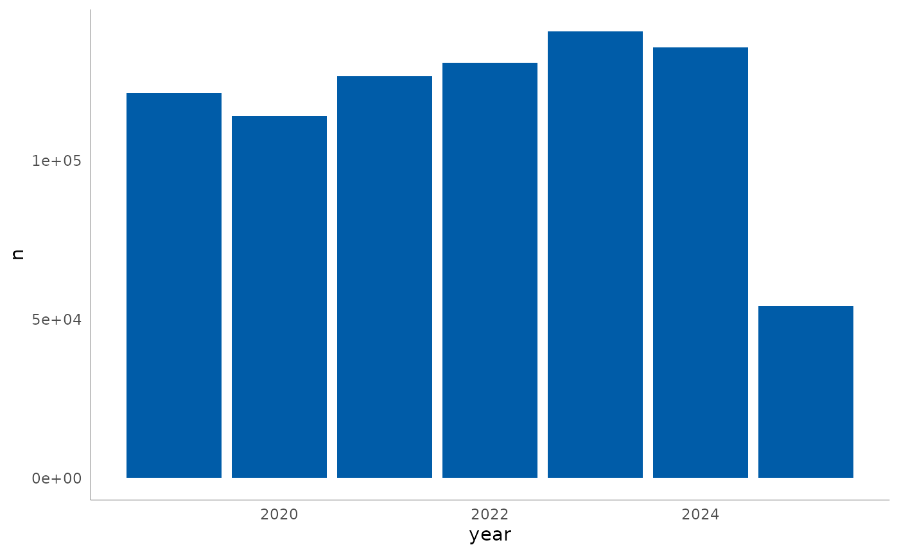

The ost.utils package provides tools and methods to
streamline the workflow in R projects developed by the Coordenadoria do
Observatório de Segurança no Trânsito (COST) of Detran-SP.
Installation
The development version of ost.utils can be installed
from GitHub
with:
# install.packages("pak")
pak::pak("pedrobsantos21/ost.utils")Package organization
This package is organized into two main groups of functions:
-
infosiga: methods to download, load and clean open data from Infosiga.SP
-
plot: helper functions to plot data withggplot2:
Usage example
In this example, we will load Infosiga road crash data and plot it
using ggplot2. First, we load the required packages:
library(ost.utils)
library(ggplot2)
library(dplyr)
#>
#> Attaching package: 'dplyr'
#> The following objects are masked from 'package:stats':
#>
#> filter, lag
#> The following objects are masked from 'package:base':
#>
#> intersect, setdiff, setequal, union
library(lubridate)
#>
#> Attaching package: 'lubridate'
#> The following objects are masked from 'package:base':
#>
#> date, intersect, setdiff, unionThen, we use download_infosiga() to save the data to a
temporary folder, load the road crash data with
load_infosiga(), and clean it with
clean_infosiga(). In a typical project, you might download
the data to a dedicated data/ folder.
temp <- tempdir()
download_infosiga(temp)
#> ℹ Starting download...
#> ✔ Download completed.
#> ℹ Extrating zip...
#> ✔ Data extracted successfully at '/tmp/RtmpEe6KXE'
df <- load_infosiga(file_type = "sinistros", path = temp)
#> ℹ Using "','" as decimal and "'.'" as grouping mark. Use `read_delim()` for more control.
#> Rows: 1208097 Columns: 43
#> ── Column specification ────────────────────────────────────────────────────────
#> Delimiter: ";"
#> chr (26): tipo_registro, data_sinistro, mes_sinistro, dia_sinistro, ano_mes...
#> dbl (15): id_sinistro, ano_sinistro, latitude, longitude, tp_veiculo_bicicl...
#> lgl (1): gravidade_ileso
#> time (1): hora_sinistro
#>
#> ℹ Use `spec()` to retrieve the full column specification for this data.
#> ℹ Specify the column types or set `show_col_types = FALSE` to quiet this message.
df_clean <- clean_infosiga(df, file_type = "sinistros")
head(df_clean)
#> # A tibble: 6 × 40
#> id_sinistro data_sinistro hora_sinistro cod_ibge regiao_administrativa
#> <dbl> <date> <time> <chr> <chr>
#> 1 2501575 2014-12-21 20:00 3509502 Campinas
#> 2 2456933 2014-12-23 NA 3505500 Barretos
#> 3 2463759 2014-12-26 06:52 3550308 Metropolitana de São Paulo
#> 4 2487781 2014-12-28 14:30 3510609 Metropolitana de São Paulo
#> 5 2489730 2014-12-28 NA 3541000 Baixada Santista
#> 6 2462674 2014-12-31 22:53 3550308 Metropolitana de São Paulo
#> # ℹ 35 more variables: nome_municipio <chr>, logradouro <chr>,
#> # numero_logradouro <dbl>, tipo_via <chr>, longitude <dbl>, latitude <dbl>,
#> # tp_veiculo_bicicleta <dbl>, tp_veiculo_caminhao <dbl>,
#> # tp_veiculo_motocicleta <dbl>, tp_veiculo_nao_disponivel <dbl>,
#> # tp_veiculo_onibus <dbl>, tp_veiculo_outros <dbl>,
#> # tp_veiculo_automovel <dbl>, tipo_registro <chr>,
#> # gravidade_nao_disponivel <dbl>, gravidade_leve <dbl>, …Now we can plot the count of road crashes per year using the custom Detran style:
df_clean |>
filter(
tipo_registro %in% c("Sinistro fatal", "Sinistro não fatal"),
year(data_sinistro) > 2018
) |>
count(year = year(data_sinistro)) |>
ggplot(aes(x = year, y=n)) +
geom_col(fill = palette_detran()$blue) +
theme_detran()